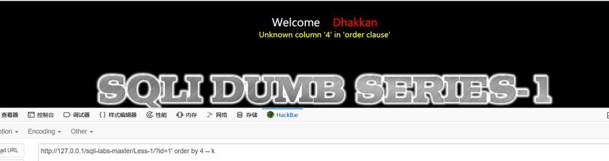
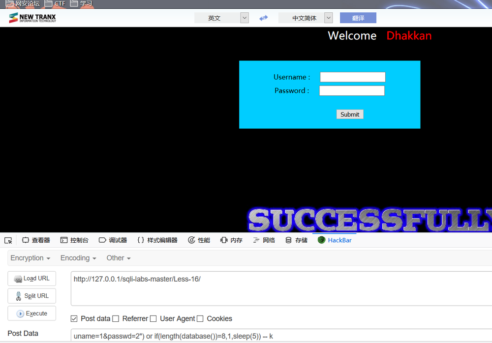
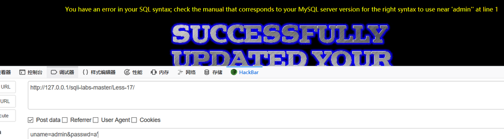

引言
SQLi-LABS 学习SQL注入(less 1-less 22)
简介
1 | GET和POST的区别及get和post关于请求的编解码的问题 |
less 1 GET - Error based - Single quotes - String(基于错误的GET单引号字符型注入)
先id=1’，发现报错
分析’’1’’ LIMIT 0,1’，除去首尾两个自动加上的单引号可以猜测出来是单引号闭合。
接下来是猜字段：

到order by 4之后报错说明select 语句只有3个查询字段
也可以用union来判断select语句有几个查询字段
可为什么union 后面的select 1,2,3没有出现其中的两个数据
并且在命令行中是可以查询到两行的
看一下源码，可以看到函数mysql_fetch_array只被调用了一次，而mysql_fetch_array() 函数从结果集中取得一行作为关联数组，或数字数组，或二者兼有，具体看你第二个参数是什么，所以这里无论怎么折腾最后只会出来第一行的查询结果。
如果要把结果集的所有行都取出来，需要用到while循环，看下面的代码1
2
3
4
5
6
7while ($row = mysql_fetch_array($result)) {
echo "<font size='5' color= '#99FF00'>";
echo 'Your Login name:'. $row['username'];
echo "<br>";
echo 'Your Password:' .$row['password'];
echo "</font>";
}
所以只要让union前面的语句查询结果为空，那么后面的select语句查询的结果就会显示出来。这个id他一般传的是数字，而且一般都是从1开始自增的，我们可以把id值设为非正数（负数或0），浮点数，字符型或字符串都行
下面就要开始真正查询数据库的信息了，可以看到只有第二列和第三列显示在网页上，所以我们只能用这两个位置，但是两个位置是不够的。这时候需要用到数据库的连接函数concat或者concat_ws其中concat_ws的第一个参数是连接字符串的分隔符，还会用到group__concat(可以把查询出来的多行连接起来)
concat和concat_ws()区别及MySQL的几个实用字符串函数
user():返回当前数据库连接使用的用户
database():返回当前数据库连接使用的数据库
version():返回当前数据库的版本
(32是空格的十进制ASCII，58是：的十进制ASCII。)
爆出了数据库版本，数据库名字和数据库连接使用的用户名。
接下来爆数据表的名字
这里的0x7365637572697479=security的16进制，因为table_schema='security'需要用单引号，因为大部分Web应用程序防火墙都过滤了单引号，而转化为16进制之后就可以突破很多防火墙及防注入程序。
mysql的数据库information_schema，他是系统数据库，安装完就有，记录是当前数据库的数据库，表，列，用户权限等信息，下面说一下常用的几个表
SCHEMATA表:储存mysql所有数据库的基本信息，包括数据库名，编码类型路径等，show databases的结果取之此表。
TABLES表:储存mysql中的表信息，（当然也有数据库名这一列，这样才能找到哪个数据库有哪些表嘛）包括这个表是基本表还是系统表，数据库的引擎是什么，表有多少行，创建时间，最后更新时间等。show tables from schemaname的结果取之此表
COLUMNS表：提供了表中的列信息，（当然也有数据库名和表名称这两列）详细表述了某张表的所有列以及每个列的信息，包括该列是那个表中的第几列，列的数据类型，列的编码类型，列的权限，猎德注释等。是show columns from schemaname.tablename的结果取之此表。
[]Mysql数据库information_schema系统表说明(https://wenku.baidu.com/view/6358a5fd89eb172ded63b7a8.html)
有了users表名，接下来就要爆字段名，同理可以通过limit把所有的字段名枚举出来，知道了有id，username，password
然后就可以直接select加枚举爆出所有的id，username，password
less 2 GET - Error based - Intiger based (基于错误的GET整型注入)
id=1’
根据报错可以知道这里是整型注入，变量没有被字符包裹。
所以这里不需要单引号，可以直接注释后面的语句，剩余操作同lesson1
less 3 GET - Error based - Single quotes with twist string (基于错误的GET单引号变形字符型注入)
id=1’
根据报错可以知道这里是(‘变量’)，所以用’)闭合，后面注释，其他同lesson1步骤即可。
之后发现id=1”也是不会报错的
但是union后面的select语句无效
最后发现是由于”没有闭合导致后面的注释不起作用。
可以用and 1=0 和1=1来判断
less 4 GET - Error based - Double Quotes - String （基于错误的GET双引号字符型注入）
直接上单引号，发现没有报错，这是因为php中双引号可以包含单引号,那么就让id=1”
根据报错可以知道这里是(“变量”)，所以”)闭合，其他同lesson1步骤
less 5 GET - Double Injection - Single Quotes - String (双注入GET单引号字符型注入)
id=1’
根据报错可以知道这里是单引号闭合，可是即使正常闭合也不会显示数据
因为源码中根本就没有输出$row
很明显正常是不能够爆出来数据库的内容，所以就要通过报错来显示数据库中的内容。
有研究人员发现，当在一个聚合函数，比如count函数后面如果使用分组语句就会把查询的一部分以错误的形式显示出来。（我发现如果没有floor和rand函数也是不会报错的）
由于这里的报错具有随机性，所以如果没有报错需要多提交几次
less 6 GET - Double Injection - Double Quotes - String (双注入GET双引号字符型注入)
和less5一样，只不过变成了双引号闭合
查表
查列
查数据
less 7 GET - Dump into outfile - String （导出文件GET字符型注入）
导出到文件就是可以将查询结果导出到一个文件中，如常见的将一句话木马导出到一个php文件中
使用此漏洞需要知道WEB程序的根路径并且MYSQL的secure-file-priv配置应为可写入该路径
id=1
id=1’发现错误被屏蔽了
而且id=1”或者id=1”)都显示正确，所以这里也涉及到了未闭合导致注释失效的问题。
但是只有id=1’)) and 1=0报错，所以可以判断出来是单引号加两个括号闭合
为什么最后的结果在数据库中不为空，是因为MySQL的隐式转换
MySQL的隐式类型转换整理总结1
2
3@@datadir 读取数据库路径
@@basedir MYSQL 获取安装路径
这里可以通过在less1中获取网站的路径
可以猜到网站路径E:\tool\PHPstudy\PHPTutorial\WWW
然后就可以通过使用SELECT...INTO OUTFILE语句导出数据到文本文件上上传一句话木马
然后上菜刀
less 8 GET - Blind - Boolian Based - Single Quotes (布尔型单引号GET盲注)
id=1
id=1’
没有任何提示，因为它把错误信息隐藏了，所以并不能用显错式注入，只能用盲注。
详解SQL盲注测试高级技巧1
2
3
4
5
6
7MySQL盲注的相关函数：
length(str)：返回str字符串的长度。
substr(str, pos, len)：将str从pos位置开始截取len长度的字符进行返回。注意这里的pos位置是从1开始的，不是数组的0开始
mid(str,pos,len):跟上面的一样，截取字符串
ascii(str)：返回字符串str的最左面字符的ASCII代码值。
ord(str):同上，返回ascii码
if(a,b,c) :a为条件，a为true，返回b，否则返回c，如if(1>2,1,0),返回0
1 | ascii(substr((select database()),1,1))：返回数据库名称的第一个字母,转化为ascii码 |
二分法猜数据库名字1
2
3
4
5
6
7
8http://localhost/sqli-labs/Less-8/?id=1' and ascii(substr((select database()),1,1)>64 %23 返回正确，大于64
http://localhost/sqli-labs/Less-8/?id=1' and ascii(substr((select database()),1,1))>96 %23 返回正确，大于96
http://localhost/sqli-labs/Less-8/?id=1' and ascii(substr((select database()),1,1))<123 %23 返回正确，小于123 ，区间在97-122
http://localhost/sqli-labs/Less-8/?id=1' and ascii(substr((select database()),1,1))>109 %23 返回正确，大于109，区间在110-122
http://localhost/sqli-labs/Less-8/?id=1' and ascii(substr((select database()),1,1))>116 %23 返回错误，所以在110-116之间
http://localhost/sqli-labs/Less-8/?id=1' and ascii(substr((select database()),1,1))>112 %23 返回正确，大于112，区间在113-116之间
http://localhost/sqli-labs/Less-8/?id=1' and ascii(substr((select database()),1,1))>114 %23 返回正确，大于114，间在115-116之间
http://localhost/sqli-labs/Less-8/?id=1' and ascii(substr((select database()),1,1))>115 %23 返回错误，不大于115，即第一个字母的ascii为115，即字母s
盲注一般是写脚本或者使用工具辅助，否则手动盲注需要大量时间
less 9 GET - Blind - Time based. - Single Quotes (基于时间的GET单引号盲注)
无论正确还是错误他都只会显示you are in......所以只能用基于时间的盲注
只有单引号闭合的时候，他才会延迟5秒。所以可以判断出来这里是单引号闭合。
然后同less 8的盲注，
当database()第一个字母的ascii大于115的时候会延迟5秒，当大于114的时候没有延迟，所以可以判断第一个字母的ascii直是115。其他数据查询方式同理
less 10 GET - Blind - Time based - double quotes (基于时间的双引号盲注)
这道题跟less 9一摸一样，只不过是单引号闭合变为双引号闭合
因为双引号闭合的时候，延迟了5秒。
less11 POST - Error Based - Single quotes- String (基于错误的POST型单引号字符型注入)
查看元素可以知道两个POST分别是uname和passwd。
首先uname=1’&passwd=2,报错1
You have an error in your SQL syntax; check the manual that corresponds to your MySQL server version for the right syntax to use near '2' LIMIT 0,1' at line 1
发现1没有报错，2为什么两边只有一个单引号，看源码
应该是加进去的单引号跟前面的单引号闭合，剩余的单引号与password前面的单引号闭合，最后剩余了password后面的单引号。
加个or 1=1 – k发现登陆成功
或者在passwd后面加单引号报错1
You have an error in your SQL syntax; check the manual that corresponds to your MySQL server version for the right syntax to use near ''2'' LIMIT 0,1' at line 1
可以发现是单引号闭合，然后直接or 1=1 – k发现登陆成功
如果是uname=1' or '1'='1&passwd=2，在源代码中显示正常
可是却登陆失败。
因为and的优先级高于or 【就是and先运算】， '1'='1' and password='2'先运算右边的password='2'在数据表中不存在，所以右边是false，那么整个and就是false。然后计算uname='1' or false ，而两边都是false所以最后的结果就是false。
那么就uname=1&passwd=2' or '1'='1在源码中
先计算uname='1' and password='2'结果是false，然后计算false or 1=1，右边是true，那么整个or就是true。
这里也可以通过盲注获取信息
less 12 POST - Error Based - Double quotes- String-with twist (基于错误的双引号POST型字符型变形的注入)
双引号报错
可以知道是(“变量”)闭合，直接绕过
less 13 POST - Double Injection - Single quotes- String -twist (POST单引号变形双注入)
单引号报错
知道是(‘变量’)闭合，可是却没有显示信息
那么就用双注入查库
查表
其余操作前面有不再细说。
less 14 POST - Double Injection - Single quotes- String -twist (POST单引号变形双注入)
变为双引号闭合，操作同less 13
less 15 POST - Blind- Boolian/time Based - Single quotes (基于bool型/时间延迟单引号POST型盲注)
错误信息被隐藏了，所以只能用盲注。
说明是单引号闭合
数据库名长度为8
数据库名第一个字母ASCII为115
二分法加limit得到所有数据表名字
同理可得到字段名，以及数据。
如果我插入uname=1&passwd=2' or sleep(5) -- k会延迟1分多最后什么也没有显示。在cmd中返回为空
原来是false or sleep(5)最后返回为0,最后就什么也查不到。
and与or的截断性
在SQL语句中如果and前面为false那么后面的语句就不会执行。
如果or前面为true那么后面的语句就不会执行。
less 16 POST - Blind- Boolian/Time Based - Double quotes (基于bool型/时间延迟的双引号POST型盲注)
同15，这里用时间延迟盲注
说明是(“闭合”)
lenth=8时不会延迟，说明数据库名字长度为8

其他把length函数换成select的操作同less 7
less 17 POST - Update Query- Error Based - String (基于错误的更新查询POST注入)
注意：下面的注入，一不小心可能把数据库的user表的密码表给清空了
1 | 第一个参数是 目标xml |
1 | function check_input($value) |
1 | check_input函数首先判断如果不为空，就截取前15个字符。 |
magic_quotes_gpc函数
addslashes函数
stripslashes函数
ctype_digit函数
mysql_real_escape_string函数
首先通过用户名找到用户名和密码，接着更新那个用户名的密码为新输入的密码。
首先要绕过通过用户名查询出用户名和密码，这个我们只能猜吧，比如admin，root，test什么的，这个可以用字典在这里我们就当知道是admin了，直接用admin就考虑下一步

这里是单引号闭合，直接用updatexml显错注入。
查表
查列
查数据
less 18 POST - Header Injection - Uagent field - Error based (基于错误的用户代理，头部POST注入)
这里对用户名和密码都加了过滤
正常登陆后显示User Agent
用burp抓包改包，先在后面加单引号出现报错信息
可以知道闭合方式为(‘变量’,’变量’,’变量’)，继续用updatexml显错注入
less 19 POST - Header Injection - Referer field - Error based (基于头部的Referer POST报错注入)
正常登陆后显示的是1
2Your IP ADDRESS is: 127.0.0.1
Your Referer is: http://127.0.0.1/sqli-labs-master/Less-18/
抓包改包，referer后加个单引号1
You have an error in your SQL syntax; check the manual that corresponds to your MySQL server version for the right syntax to use near '127.0.0.1')' at line 1
可以猜测闭合方式为(‘变量’,’变量’)也可以用updatexml
还有另一个报错函数extractvalue
第一个参数也是个xml，第二个参数就是xpath的表达式，这个函数是获取xml中某个节点的值
less 20 POST - Cookie injections - Uagent field - Error based (基于错误的cookie头部POST注入)
两种方式
1 登陆的时候抓包在cookie后面加单引号
可以知道是单引号闭合，然后通过联合查询知道有3列
然后就可以用concat函数获得数据。
2.已经登陆并且有了cookie
less 21 Cookie Injection- Error Based- complex - string ( 基于错误的复杂的字符型Cookie注入)
抓包发现cookie经过了base64编码
对admin’进行base64编码并发送过去发现报错信息
可以知道是(‘变量’)闭合方式
对SQL语句进行BASE64编码并发送
其余同之前的操作
less 22 Cookie Injection- Error Based- Double Quotes - string (基于错误的双引号字符型Cookie注入)
这个跟less 21一样只不过闭合方式变成了(“变量”)
介绍：仅供技术交流学习探讨，请勿用于非法用途。本文部分资源来源于网络，如有侵权请联系版主删除。